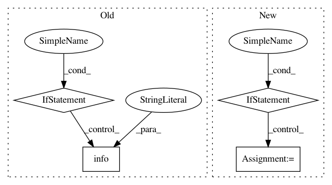

2e530e78c78c3f9f899143c437f55618d3038951,deeppavlov/core/models/tf_model.py,TFModel,load,#TFModel#,116
Before Change
Load session from checkpoint
ckpt = self.get_checkpoint_state()
if ckpt and ckpt.model_checkpoint_path:
log.info("[restoring checkpoint from {}]".format(ckpt.model_checkpoint_path))
self._saver().restore(self.sess, ckpt.model_checkpoint_path)
log.info("session restored")
else:
log.error("checkpoint not found!")
class SimpleTFModel(NNModel, metaclass=TfModelMeta):
def __init__(self, *args, **kwargs):
super().__init__(*args, **kwargs)
After Change
Load model parameters from self.load_path
path = str(self.load_path.resolve())
// Check presence of the model files
if tf.train.checkpoint_exists(path):
print("[loading model from {}]".format(path), file=sys.stderr)
saver = tf.train.Saver()
saver.restore(self.sess, path)
def save(self):
Save model parameters to self.save_path
path = str(self.save_path.resolve())
print("[saving model to {}]".format(path), file=sys.stderr)
In pattern: SUPERPATTERN
Frequency: 3
Non-data size: 4
Instances
Project Name: deepmipt/DeepPavlov
Commit Name: 2e530e78c78c3f9f899143c437f55618d3038951
Time: 2018-02-18
Author: arkhipov@yahoo.com
File Name: deeppavlov/core/models/tf_model.py
Class Name: TFModel
Method Name: load
Project Name: ray-project/ray
Commit Name: 0d36e4c025e7c8f208c126709a33730aef1c3600
Time: 2020-09-28
Author: ameerh@berkeley.edu
File Name: python/ray/autoscaler/_private/resource_demand_scheduler.py
Class Name: ResourceDemandScheduler
Method Name: get_nodes_to_launch
Project Name: microsoft/nni
Commit Name: 2de52a8976971da4836727ba9242fedcc7474878
Time: 2020-01-16
Author: 656569648@qq.com
File Name: src/sdk/pynni/nni/compression/torch/compressor.py
Class Name: Pruner
Method Name: export_model